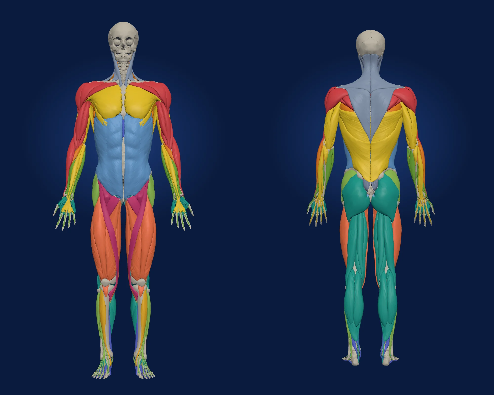
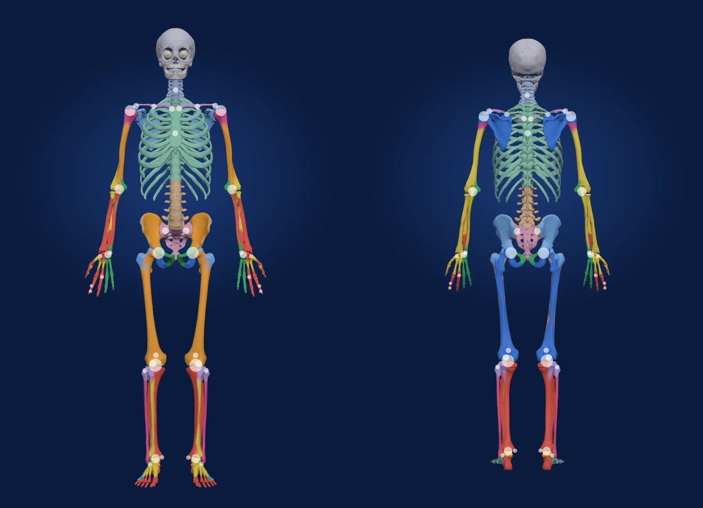

Loading model…
Drag to turn. Scroll or pinch to zoom, which helps with fingers and toes. Right-drag or two-finger drag to move.
Anatomy: BodyParts3D, © The Database Center for Life Science, licensed under CC Attribution-Share Alike 2.1 Japan. Zone assignments: NORA², Dr Arun Mohanraj FRCA EDRA, Wrightington, Wigan and Leigh NHS Foundation Trust.
Draft for clinical sign-off. Revised 21 November 2026. Two dermatome maps are shown on the same model: the evidence-based map of Lee, McPhee and Stringer (2008), and a map drawn to the international key sensory points (ISNCSCI, revised 2019). Published charts differ, and neighbouring dermatomes overlap in life.
Reference figures
Front and back views from the same model, for teaching slides and print.



How this map was built
- Dermatomes: core zones follow the international key sensory points and the evidence-based map of Lee 2008. Between key points the borders are placed by rule on the model, and are shown with overlap because published maps disagree (Downs 2011; Challoumas 2018).
- Myotomes: root values marked as reviewed come from nerve root stimulation, plexus injury and EMG studies (Schirmer 2011; Bell 2016; Furukawa 2021; Chiba 2015; Zhu 2015; Hashimoto 2024). The remainder use standard anatomical root values and say so when selected.
- Bone and joint: supply is shown by peripheral nerve, with the proportion of specimens in which each nerve was found. Root-by-root maps of bone are not supported by the evidence (Ivanusic 2007).
- Nerve named for each point: typical textbook fields. In volunteers these fields varied widely and overlapped (Keplinger 2018).